← 返回阅读库 · 原论文目录
论文讲解阅读文档 · 机器人学 · v137
OpenVLA An Open-Source Vision-Language-Action Model[2406.09246]
视频时长 00:05:30；讲解文字 2,400 字符；提取讲解画面 21 张。按视频原顺序阅读，每段文字保留时间戳。
文字来自整段视频的自动语音转写，按自然停顿分段，并与 PPT / 论文页面 / 演示画面对齐。未将讲解压缩为摘要；术语、数字和口述公式请结合画面及原论文核对。 阅读稿已校正规范部分明确术语误识别；原始逐字稿和每处修改记录另行保留。
讲解画面为源视频截图（640×360），不是可编辑 PPT 文件。全片按每秒 2 帧扫描内容变化，逐步展开页保留；连续动画保留代表画面。清晰度受源视频限制。
下载完整资料包 · 含离线 HTML、PDF、Word、全部 PPT 画面和字幕。
原论文与材料
OpenVLA: An Open-Source Vision-Language-Action Model · 下载完整 PDF（37 页）
按时间阅读
00:00:00–00:00:19 · 画面 001
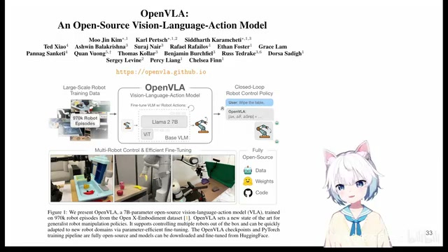
00:00:00–00:00:19 · 画面 001大家好，今天我们来快速说一篇论文，OpenVLA: An Open Source Vision Language Action Model。这篇论文其实它的核心的贡献就是在于这个 Open，它的整个的结构其实就是仿照了 RT2Google 提出的 Robotic Transformer 2，这个东西我们具体来看一下。
00:00:19–00:01:05 · 画面 002
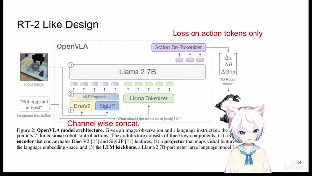
00:00:19–00:01:05 · 画面 002那么首先一个快速的回顾，RT2。RT2 它的结构本质上就是你有当前的一个图像。然后你还有当前想要做的任务。你把这个图像和文本。一起送到我们的 Vision Language Model 里面。然后 Vision Language Model直接给你生成了一系列的特殊的 token。那么这些 token 可以被解码成。实际能够操作这个机器人运行的。
这样的一些数值比如说你看 XYZ三个空间的移动然后 end effector 它的朝向以及最后比如说这是一个 Gripper。它的开闭这样的一个自由度的机器人的动作。RT2 的一个特点就是它是直接从一个 Vision Language Model 上。进行这样一个 fine-tuning
00:01:05–00:01:07 · 画面 003
00:01:05–00:01:07 · 画面 003然后发现效果是很好的。
00:01:07–00:01:16 · 画面 004
00:01:07–00:01:16 · 画面 004很有意思的一个事情。那一切听起来都很好。但是谷歌没有放出这个模型来。那你看到的从它的网络结构上来看。
00:01:16–00:01:17 · 画面 005
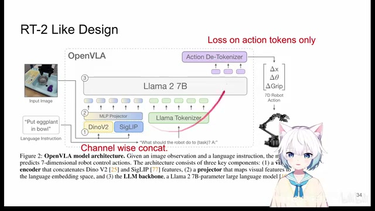
00:01:16–00:01:17 · 画面 00500:01:17–00:01:33 · 画面 006
00:01:17–00:01:33 · 画面 006它沿用的还是一个 LLaVA 的一个构型。就是你的图像是经过这个 image encoder，然后呢过 mlp projector，把你的图像 token 变成变成文本 embedding 里面的这个 token，然后呢和你正经的这个文本的 token 在一起一直送到这个 language model 里面，然后呢做 auto regressive next token prediction，对吧，一个一个 token 生成出来。那你最后在训练的时候呢，你还是只把 loss 加在这些生成的这个部分 token 上。
00:01:33–00:01:34 · 画面 007
00:01:33–00:01:34 · 画面 00700:01:34–00:01:44 · 画面 008
00:01:34–00:01:44 · 画面 00800:01:44–00:01:46 · 画面 009
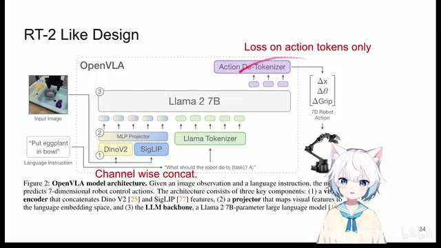
00:01:44–00:01:46 · 画面 00900:01:46–00:02:29 · 画面 010
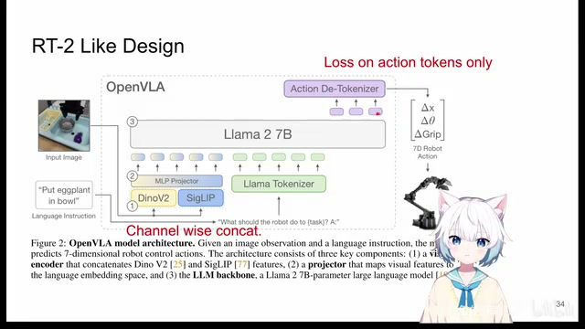
00:01:46–00:02:29 · 画面 010前面这些 token 无所谓，这个就是依照 LLaVA 的一个结构，如果你不清楚这块之前，我们有视频介绍 LLaVA，这里我们就不再重复了。那么相比于经典 LLaVA，这里做的最核心的一个改动就是我们的图像 encoder 做了增强。像 LLaVA 我们知道它是用的 Clip Vision Encoder 就结束了，那么这里作者用了一个是 DINO，它用来提供更加细节的图像中的 Feature，然后还有 SigLIP，把两个快乐结合在一起对吧，本来应该获得一个更快乐的事情，就是把两个 Encoder 提出来的 Feature 在 Channel 这个尺度上他们做一个 Concatenation，然后再经过投影送到我们的 Language Space 里面。
00:02:29–00:02:30 · 画面 011
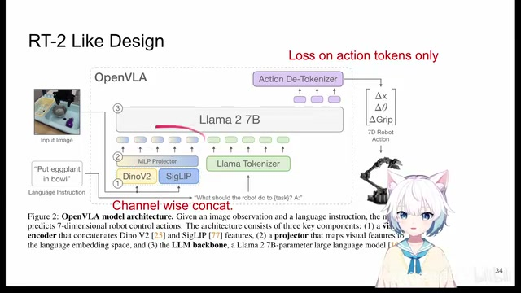
00:02:29–00:02:30 · 画面 01100:02:30–00:02:46 · 画面 012
00:02:30–00:02:46 · 画面 012这个就是本文的实现，所以它也不是什么新的东西，我们看到现在越来越多的模型的设计倾向于使用这样两种 image encoder 两种结合的形式，这个就是本文的一个设计。具体到它的实验细节，比如说我们一个 0-1 这样的一个数值还是被量化到 256 个 bins，这 256 个 bins 就是 256 个 token。
00:02:46–00:03:18 · 画面 013
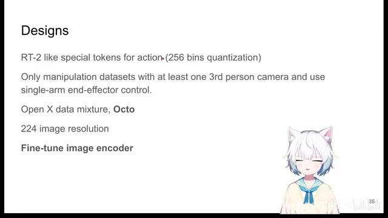
00:02:46–00:03:18 · 画面 013它也是直接选取的 tokenizer 里面被用的最少的这些 token 直接给它重写过去，这是一个跟 RT2 一样的设计。那训练的数据是 openx，这里作者只选了这个 manipulation 这样的任务，同时至少有一个第三人称的这样一个摄像头好看着，然后我们一次只控制一个机械臂带 end effector 这样的一个构型。这里我们注意两个点，特别是当你想在家里也搓一个类似的东西的时候，那么第一个就是以 openx dataset。
00:03:18–00:03:23 · 画面 014
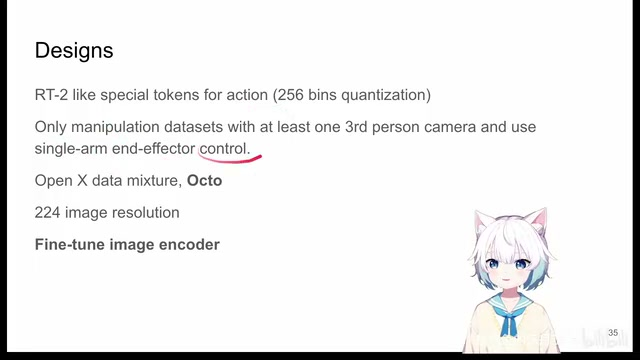
00:03:18–00:03:23 · 画面 01400:03:23–00:03:36 · 画面 015
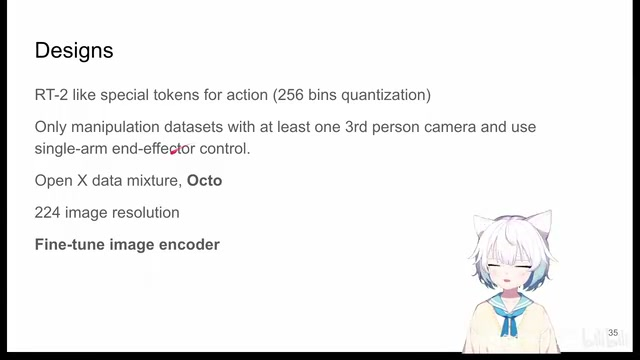
00:03:23–00:03:36 · 画面 015拿过来不是直接用的，你要改一下里面各个数据集的比例，这个部分它参考的是 Octo 这一篇工作。那么第二个就是作者发现我们的 Image Encoder 以往的实践，比如说 LLaVA 实践告诉我们 Image Encoder 就不要动，但是这里作者发现 Image Encoder 还是要做一点 fine-tuning，它效果会更好。
00:03:36–00:03:37 · 画面 016
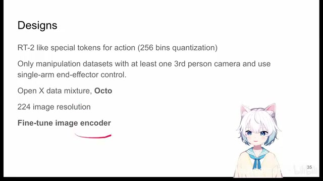
00:03:36–00:03:37 · 画面 01600:03:37–00:03:46 · 画面 017
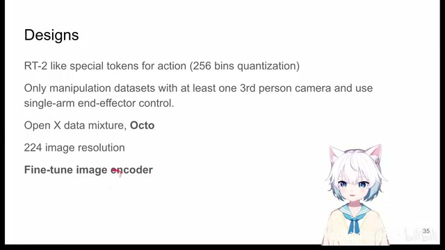
00:03:37–00:03:46 · 画面 01700:03:46–00:03:56 · 画面 018
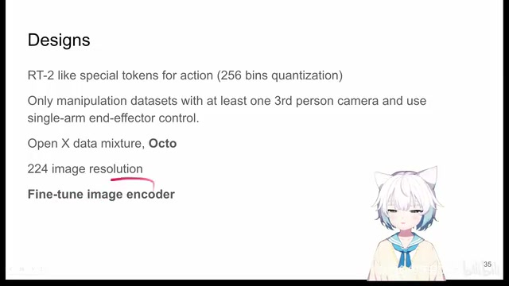
00:03:46–00:03:56 · 画面 018那么在这个时间点上，我们为什么要提这样一个 paper？他的 idea 看起来平平无奇，无非就是把这个东西 open 了起来，对吧？但是呢，我们观察到的第一个点就是 image encoder 对于我们各种 robotics 问题，特别是我们 robotics 看到的 image，很多时候跟我们正常生活中看到的 image 不太一样，因此呢，我们是很有必要去 fine-tune image encoder。在这里呢，我的一个朋友他最近正好也有一篇工作，在这个问题上做了更详细的讨论。
00:03:56–00:04:28 · 画面 019
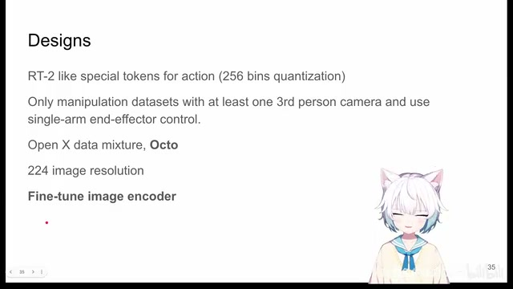
00:03:56–00:04:28 · 画面 019等他们的 arXiv 放出来呢，我们可以仔细聊一聊。那么第二点呢，就是在这个时点下，我们做机器人的控制，似乎呢还是脱不开像这个 RT2 这样子的，就是用特殊的 token 去映射这些 action space 这种东西。那当然我并不是说它不好，它是一个很通用的一个解法，可以直接使用我们现在已经有的各种比如说 behaviour cloning 的数据集，这是一个好的方法。
00:04:28–00:05:30 · 画面 020
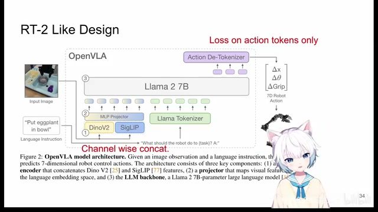
00:04:28–00:05:30 · 画面 020但是呢，我们并不总是局限于这样一种思路。甚至就数据集本身，我们针对 Vision-Language Model 特别是 Instruction Tuning 这样的，我们能去做更多的事情。这就不得不说，那这就不得不说，我的另一个朋友在过去的三个月带着一组人做的另一个工作。他们现在还在完善最后的细节，可能再过上一两个月才会把这个 arXiv 放出来。不过他们展现的那一种可能性，虽然是有一定的局限，但我觉得还是很有意思的。好的，那么以上就是这个视频的主要内容。更多的还是借着这个话头，我们来闲聊一点最近的进展，只是告诉大家，过去的三个月我只是在忙，但是一切都好。那么感谢您的收看，请多多指点。
00:05:30–00:05:30 · 画面 021
00:05:30–00:05:30 · 画面 021转写与来源说明 · 0 个自动复核提示
保留 37 个原始语音片段，0 个片段触发自动复核提示。提示仅用于定位可能的术语、重复或识别问题，不等于已确认错误。
讲解画面为源视频截图（640×360），不是可编辑 PPT 文件。全片按每秒 2 帧扫描内容变化，逐步展开页保留；连续动画保留代表画面。清晰度受源视频限制。
原视频：paper/合集_2026-10-16_机器人学/[论文速览]OpenVLA An Open-Source Vision-Language-Action Model[2406.09246].mp4
SHA-256：7b204cef6dfc33eda284e36aef4d3a850f4dadbcef0f5b43bbdd3c764c443085
全文按视频语音与画面制作。原论文可从上方链接下载；完整资料包保留全文、原始逐字稿、字幕和校对记录。